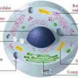

Definición

El núcleo celular es la parte central de las células eucariotas, que son las que contienen todos los
datos genéticos que se necesitan en el momento de la reproducción. Se compone de un organelo blando que
contiene ADN y ARN y cuyo contenido no es liberado hasta que el espermatozoide fecunde al óvulo.
La función del núcleo es mantener la integridad de los genes de los cromosomas e inspeccionar las
actividades celulares regulando la expresión génica siendo, en resumen, el centro de control
celular.
La estructura principal de este es la envoltura nuclear, la cual separa ese contenido del citoplasma y
además cuenta con poros nucleares, los cuales permiten el paso atravesando la membrana para el
mantenimiento cromosómico y la expresión genética.
Envoltura nuclear
Está compuesta, entre otras cosas, por dos membranas: una externa y otra interna, dispuestas
paralelamente
una sobre la otra.
La envoltura nuclear se encuentra traspasada por poros nucleares, gracias a los cuales existe un
movimiento
en dos direcciones establecido entre el citosol celular y el núcleo, evitando que las macromoléculas
difundan libremente entre el nucleoplasma y el citoplasma.
Continua con la membrana del retículo endoplasmático rugoso (RER) donde está la membrana nuclear externa
que
se encuentra igualmente perforada de ribosomas.
El espacio existente entre las membranas es continuo con la luz del retículo endoplasmático rugoso y es
conocido como espacio o cisterna perinuclear.